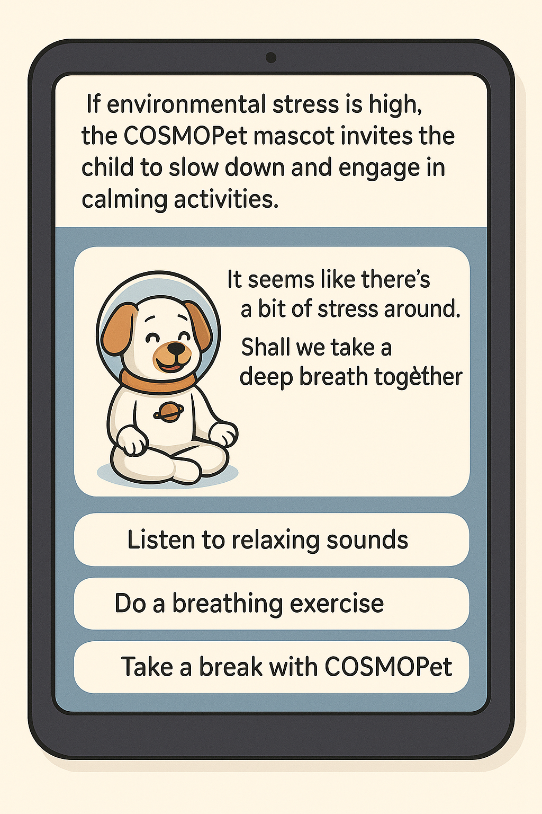

CosmoPet uses Copernicus satellite data to monitor real-time environmental conditions that influence children's mental health.
- 🌫️ Detection of NO₂, PM10, and urban heat islands via Sentinel-4
- 🌳 Green space mapping using HR-VPP
- ⚠️ Alerts when environment is high-risk for anxiety or stress
These data are processed by artificial intelligence to personalize pet therapy and music therapy inside the app.
Environmental Comparison – 🇮🇹 Naples vs 🇬🇷 Athens:
🇮🇹 Naples, Italy
- High NO₂ levels in urban areas
- Moderate green space availability
- AI triggers focus music + hydration reminder
🇬🇷 Athens, Greece
- High NO₂ + heat islands
- Low green space per child
- AI suggests breathing game + calming music therapy
This example shows how local data can activate real-time adaptive interventions. Movere 2.0 is a pilot project in Italy, but scalable and replicable across Europe.
🇮🇹 Naples, Italy
- High NO₂ levels in urban areas
- Moderate green space availability
- AI triggers focus music + hydration reminder
🇬🇷 Athens, Greece
- High NO₂ + heat islands
- Low green space per child
- AI suggests breathing game + calming music therapy
This example shows how local data can activate real-time adaptive interventions. Movere 2.0 is a pilot project in Italy, but scalable and replicable across Europe.
If environmental stress is high, the COSMOPet mascot invites the child to slow down, listen to relaxing sounds, or perform breathing exercises.
💡 How it works:
Input detected → Excessive noise, abrupt movement, elevated heart rate (if sensors are available).
Trigger → Stress threshold exceeded.
Output → The COSMOPet mascot gently and interactively invites the child to relax with calming suggestions.
Input detected → Excessive noise, abrupt movement, elevated heart rate (if sensors are available).
Trigger → Stress threshold exceeded.
Output → The COSMOPet mascot gently and interactively invites the child to relax with calming suggestions.
